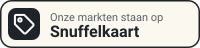

Agenda
De eerstvolgende twee maanden. Op de kaart zie je ook welke kringlopen er die dag open zijn.
November 2026
- zo15novVlooienmarkt EemnesGecontroleerdEemnes · Huis van Eemnes · 9:00–16:00 · €4
- za21novVlooienmarkt EnschedeGecontroleerdEnschede · HANGAR 11 VLIEGVELD TWENTE · 9:00–16:00 · €6
- zo22novVlooienmarkt EnschedeGecontroleerdEnschede · HANGAR 11 VLIEGVELD TWENTE · 9:00–16:00 · €6
- zo22novVlooienmarkt HuizenGecontroleerdHuizen · Sporthal de Meent · 9:00–16:00 · €3,50
- za28novVlooienmarkt GoesGecontroleerdGoes · ZEELANDHALLEN GOES · 9:00–16:00 · €6
- zo29novVlooienmarkt AmstelveenGecontroleerdAmstelveen · De Emergohal · 9:00–16:00 · €4
- zo29novVlooienmarkt RijswijkGecontroleerdRijswijk · Sporthal de Schilp · 9:00–16:00 · €4
December 2026
- zo6decVlooienmarkt VijfhuizenGecontroleerdVijfhuizen · EXPO Greater Amsterdam · 9:00–16:00
- zo6decVlooienmarkt GorredijkGecontroleerdGorredijk · Sportcentrum Kortezwaag · 9:00–16:00 · €3,50
- za19decVlooienmarkt NijkerkGecontroleerdNijkerk · Hart van Holland · 9:00–16:00 · €5
- zo20decVlooienmarkt PijnackerGecontroleerdPijnacker · Sporthal de Viergang · 9:00–16:00 · €4
- zo20decVlooienmarkt NijkerkGecontroleerdNijkerk · Hart van Holland · 9:00–16:00 · €5
- zo27decVlooienmarkt LeiderdorpGecontroleerdLeiderdorp · Sporthal de Bloemerd · 9:00–16:00 · €3,50
- zo27decVlooienmarkt ZeistGecontroleerdZeist · Sporthal Dijnselburg · 9:00–16:00 · €3,50
Plaatsen
Organiseer je deze markten?
Zet onze badge op je site, dan vinden bezoekers je markten ook op de kaart, samen met de kringlopen in de buurt. Klopt er iets niet? Mail ons.

Elke donderdag de markten rond jouw plaats
Een korte mail met de rommelmarkten van het weekend, binnen de afstand die je kiest. Geen markten in de buurt, dan geen mail.